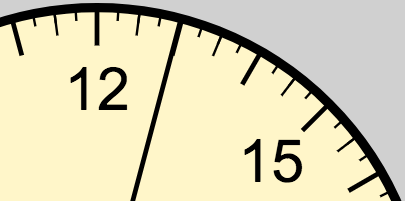
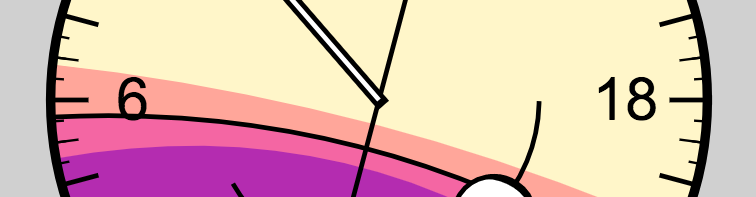
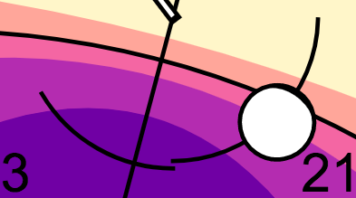

How to read the clock
The clock takes your browser's current location on Earth (if you allow it). Along with your device's system time, it calculates current time, sun times, moon times, and the moon's phase.
Time
The time of day is shown around the furthest radius of the clock. Time is indicated in 24 hour time.
00:00 is indicated at the bottom of the clock.
Numerals mark every 3 hours around the clock face.
Line markers are positioned at:
- Every hour, shown by the longest line demarcations
- Every half hour, shown by the medium-length demarcations
- Every quarter hour, shown by the minor demarcations
The current time is displayed by the indicator spanning from the center of the clock to the outer radius. The clockface is redrawn every second (with some delay from calculating your browser's geolocation).
Sun times
The luminance of the sun is shown as the backdrop for the clock's face. This colored backdrop marks daylight and night times for the current calendar day.
Where these colored fields meet the outer radius indicates when they occur during the day. Sunrise and sunset are stroked to make this time easier to see.
These colored fields change throughout the seasons, filling more with night during the winter, and more with day during the summer.
Day
Day time is indicated by the lightest field of color.
Golden hour
The golden hour is indicated by the next shade. This time, along with dawn and dusk, is considered the best time for outdoor photography. The sun is above the horizon in this time.
Sunrise and sunset
The stroke between golden hour and dusk indicates sunrise and sunset times. Follow the stroke to where it meets the outer radius to determine sunrise and sunset times.
In the morning, this line represents the time when the sun has fully risen, all of the sun's radius is visible. In the evening, this line represents the time when the sun begins to descend below the horizon, not the time when it has fully set.
Dawn and dusk
Dawn and dusk are similar to the golden hour, in that outdoor photographers prefer the temperature of light that is produced at these times. Unlike golden hour, the sun is below the horizon during dawn and dusk.
Twilight
The twilight color field indicates the time when stars become visible to the naked eye.
Night
The night field indicates when the sky is at or near its darkest.
Moon times and phases
The inner arc marks the times when the moon is present in the sky at your browser's location.
The moon is visible when the time indicator intersects with the moon arc. If the moon is visible all day, the inner arc will show a complete circle. If the moon is not visible at all during the day, the moon and the arc will not display.
Moon times are calculated each calendar day. You may notice a break in the arc. This means that the moon rose on the previous calendar day or sets on the next calendar day.
The moon's phase is shown on the face of the moon:
- A new moon is shown as a completely black face.
- A full moon is shown as a completely white face.
Waning and waxing moons are shown by various arcs of illumination on the moon's face.
The moon's orientation is based on your latitude. For example, in the northern hemisphere, the moon waxes and wanes from right to left. In the southern hemisphere, it waxes and wanes from left to right. At the horizon, it fills like a boat.
This is a stylistic interpretation, as the appearance of the moon changes based on the moon's trajectory across the sky. But, it's fun to think about. Here in Australia, we see the moon and constellations upside down.
Solar noon and midnight
Finally, the marker that splits straight across the clock's face shows solar noon and midnight. This is the time when the sun is at it's highest point in the sky, or it's furthest point away at night.